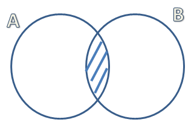

Napravićemo mali podsetnik osnovnih skupovnih operacija. Nas će zanimati 4 osnovne relacije, a to su:
- Podskup skupa: Skup A je podskup skupa B ako se svi elementi koji se nalaze u A, nalaze i u B. Oznaka je \(A \subset B\).
- Unija: unija skupova A i B obuhvata sve elemnete oba skupa, tj. element pripada uniji ako pripada skupu A ili skupu B. Oznaka je \(A \cup B\). Unija je osenčena na slici.

- Presek: presek skupova A i B obuhvata sve elemente koji se nalaze u oba skupa, tj. element pripada preseku ako pripada skupu A i skupu B. Oznaka je \(A \cap B\)

- Razlika: razlika skupova A i B obuhvata sve elemente koji se nalaze u A ali se ne nalaze u skupu B. Oznaka je \(AB^c\)
Pokazaćemo na primerima kako se skupovne operacije primenjuju prilikom izračunavanja verovatnoće.
Primer 4.8 Neka je događaj A – na kockici za igru je pao paran broj a događaj B – pao je broj deljiv sa tri. Odrediti presek, uniju i razliku događaja A i B i izračunati njihovu verovatnoću.
Rešenje. Odredimo prvo ishode povoljne za događaj A. To su {2,4,6}. Povoljni ishodi za događaj B su {3,6}.
U uniji se nalaze svi ishodi koji su povoljni za oba događaja, odnosno u ovom slučaju, to su ishodi da je broj paran ili deljiv sa 3, tj \(A \cup B\) = {2,3,4,6}.
Broj povoljnih ishoda je 4, a ukupan broj ishoda je 6. Odatle sledi da je
\[P_{A \cup B}=\frac{2}{6}=\frac{1}{3}\] U preseku se nalaze svi ishodi koji su i parni i deljivi sa 3, odnosno \(A \cap B\)={6}.
Broj povoljnih ishoda je 1. Odatle sledi da je verovatnoća: \[P_{A \cap B}=\frac{1}{6}\] Za razliku \(AB^c\) podrazumevamo sve ishode koji su parni, a nisu deljivi sa 3, odnosno \(AB^c\)={2,4}.
Broj povoljnih ishoda je 2. Odatle sledi da je verovatnoća: \[P_{AB^c}=\frac{2}{6}=\frac{1}{3}\]